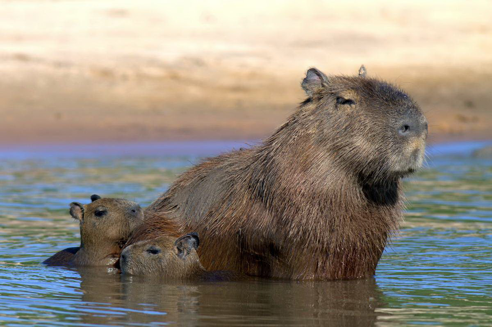

Капибара животное, которое предпочитает местность с влажным климатом.
Умеренный климат Центральной и Южной Америки, Колумбии, Аргентины, Бразилии, Венесуэлы манят к себе этих грызунов.
Для комфорта и нормального образа жизни им нужны берега водоемов или лесные болота.
Они могут отойти от водоемов в виду каких-то обстоятельств, но не более, чем на километр.
Животные слишком привередливы к температурному режиму воды и воздуха.
На их поведение существенно влияет сезонное колебание воды.
Когда приходит время сильных дождей и многоводия капибары разбредаются по всей территории.
Во времена засухи животные скапливаются большим количеством у берегов рек и водоемов.
Вся жизнедеятельность этого уникального животного связана с водой.
Вода помогает утолить жажду и голод, а также помогает регулировать температуру тела.
В воде капибара отдыхает, принимая грязевые ванны, в том числе и размножается.
Эти животные предпочитают жить немногочисленными группами, насчитывающими до 2-х десятков особей.
Как правило, группой управляет доминантный самец, хотя в каждой группе имеются и другие самцы.
Кроме этого, в группу входит несколько половозрелых самок с приплодом.
Если некоторые самцы начинают претендовать на место доминантного самца, то он с ними не церемонится и изгоняет из группы.
Именно по этой причине до 10 процентов самцов живут отдельно от группы.
У самцов, как и у самок, имеются специальные прианальные железы, которые выделяют индивидуальный по запаху секрет.
У самцов также имеются обонятельные железы, аромат которых отображает иерархическое положение самца в стаде.
Каждая группа занимает индивидуальный участок, площадью в несколько гектаров или в несколько сотен гектаров.
Такая территория помечается, как анальными секретами, так и носовыми секретами.
Несмотря на это, междоусобицы случаются, хотя и не часто.
Поединки между самцами внутри каждой группы не являются кровопролитными, а если дерутся самцы из разных групп, то возможен вполне безрадостный исход.
Когда наступает сезон дождей, капибару встречаются на обширных территориях, но с наступлением засушливого периода, эти животные собираются на различных, еще не высохших водоемах.
В период засух на берегах водоемов скапливается огромное число подобных животных, которые в поисках воды иногда преодолевают до 1 тыс. километров.
Утром, когда еще не взошло солнце, капибары предпочитают находиться в береговой зоне, но, по мере нарастания жары животные начинают перемещаться в воду или начинают принимать грязевые ванны.
Водяные свиньи живут непосредственно на поверхности земли и защитных укрытий для себя не роют.
Зачастую, можно увидеть капибар, сидящих на бедрах, в позе собаки.
В отличие от других грызунов, капибары не удерживают передними конечностями корм любого происхождения.
Начиная с 16 часов наблюдается момент активности этих животных.
Особенно активны эти млекопитающие после 20 часов вечера. Капибары спят мало.
Они просыпаются ночью для того, чтобы опять подкрепиться.
Передвигаются по поверхности земли в основном двумя способами:
неторопливой шаркающей походкой или прыжками галопом.
В случае опасности прибегают к быстрым прыжкам.
Капибары прекрасно себя чувствуют в воде, о чем свидетельствуют перепонки, соединяющие пальцы на конечностях.
Кроме этого, внушительная жировая прослойка позволяет животному удерживаться на поверхности воды.
В арсенале этих животных множество звуков, поэтому неудивительно услышать, как капибара кудахтает, кричит, лает, свистит, визжит, хныкает, щелкает и скрипит зубами.
Водяные свиньи, обитая в условиях дикой природы, живут не больше 10 лет, а вот животные, обитающие в условиях неволи, при соблюдении всех правил содержания, живут больше 10 лет.